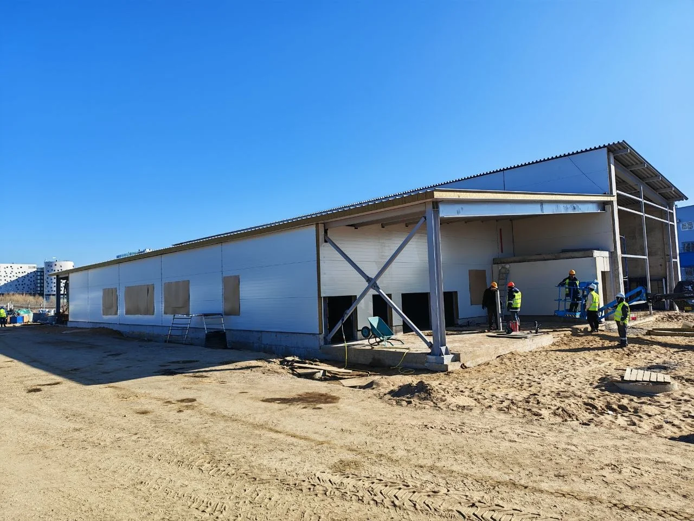
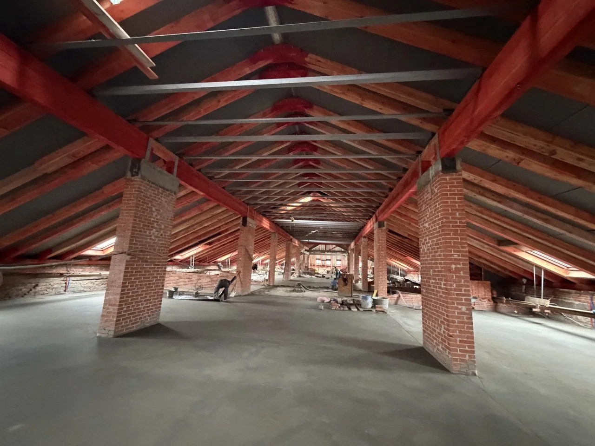
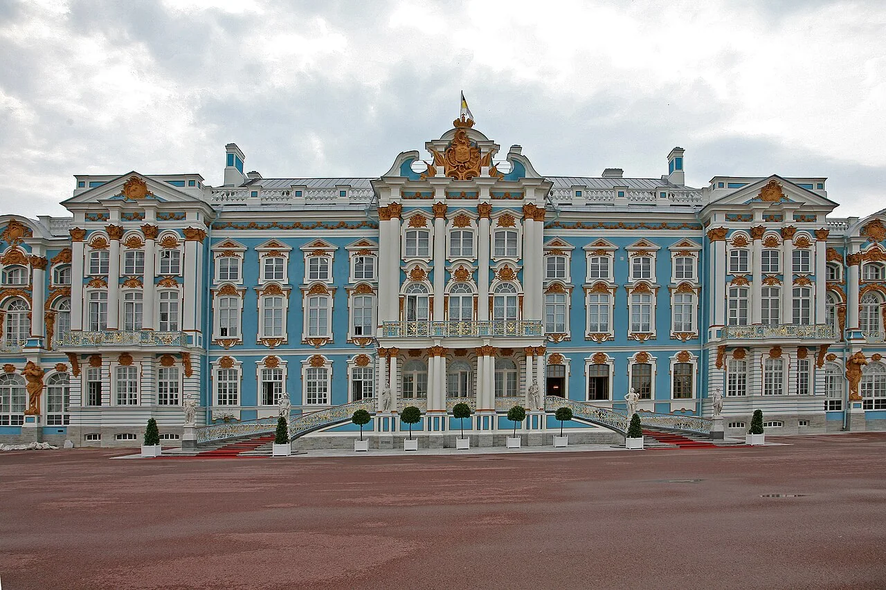
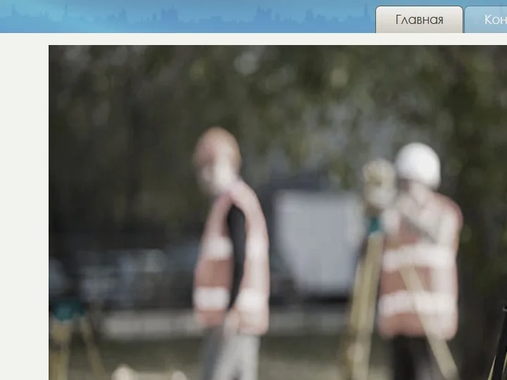
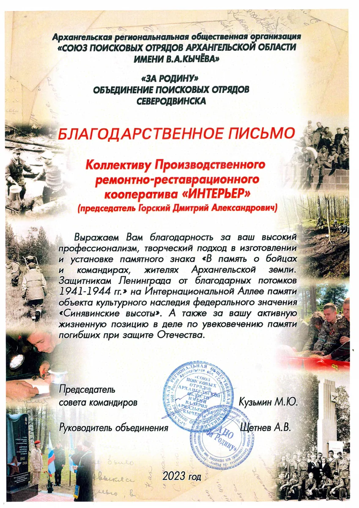
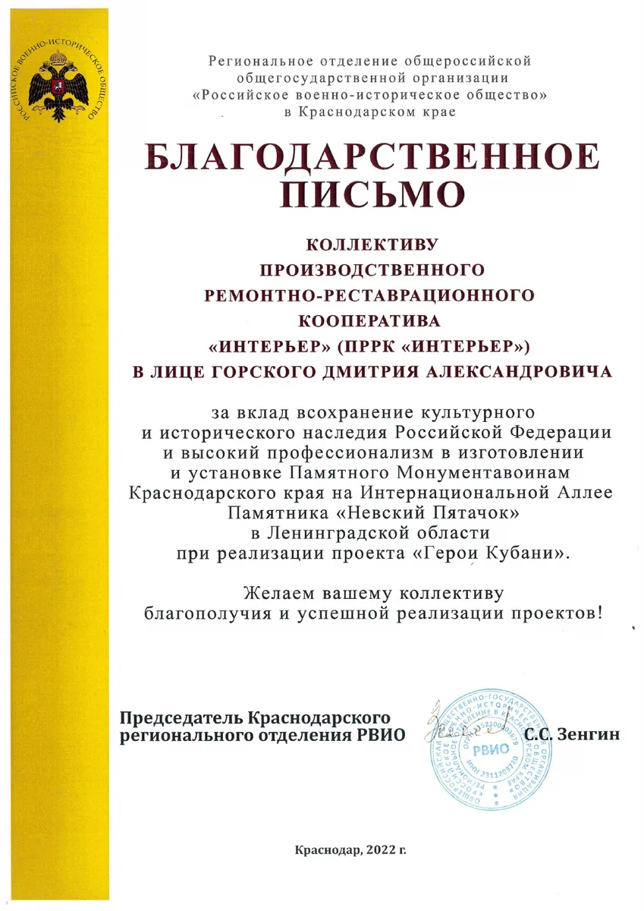
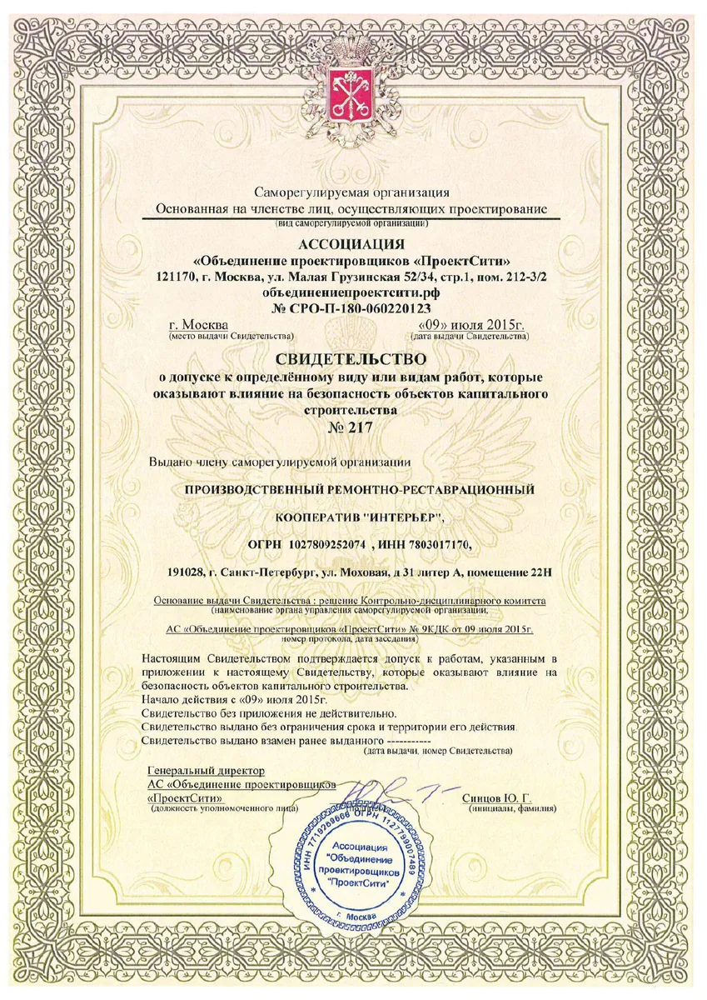
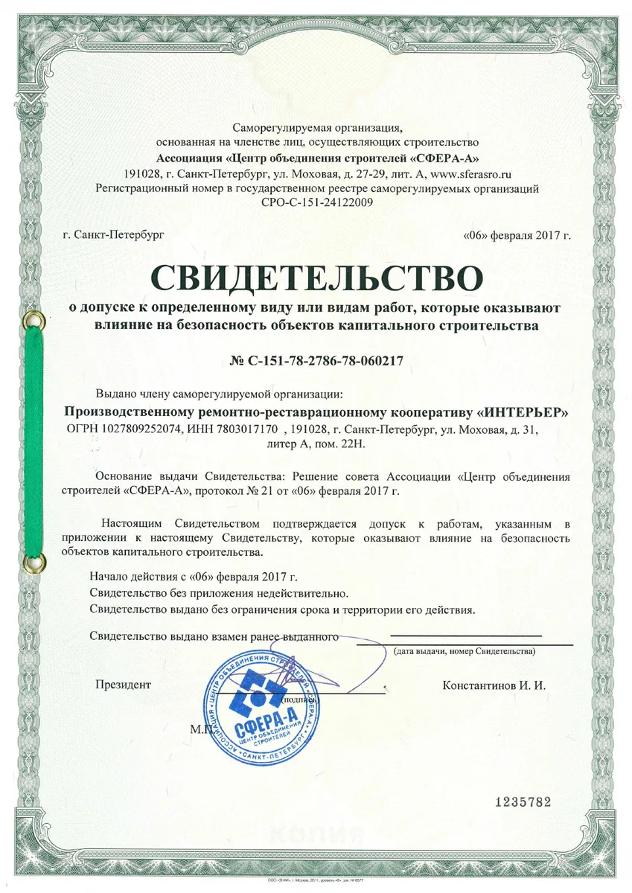

Реставрация и фасады
Объекты культурного наследия, фасады и внутренние ремонтно-отделочные работы.
Полный цикл строительных и ремонтно-реставрационных работ — от обследования и проектирования до генерального подряда и сдачи объекта.
ПРРК «Интерьер» начал работу как реставрационный кооператив, созданный специалистами НПО «Реставратор». Со временем к реставрации добавились проектирование, генеральный подряд, общестроительные работы, инженерные сети и промышленное строительство.
Сегодня компания объединяет специалистов разных направлений и может сопровождать проект на всех стадиях — от обследования и документации до производства работ и сдачи.


Структура услуг сохранена из действующего сайта, но собрана короче и понятнее для заказчика.
Объекты культурного наследия, фасады и внутренние ремонтно-отделочные работы.
Организация строительства, управление подрядчиками и технический контроль.
Здания, сооружения, инженерные сети, обследования и сопровождение.
Фундаменты, перекрытия, бетонные работы, металлоконструкции и ангары.
Водоснабжение, канализация, отопление, газоснабжение и коммуникации.
Промышленное и гражданское строительство, территории и дорожные работы.
Не общие обещания, а понятные принципы, которые отражают содержание действующего сайта компании.

Реставрация начинается с исследования здания, его изменений и подтверждённых данных. Решения должны сохранять архитектурную ценность и обеспечивать безопасную дальнейшую эксплуатацию.

Инженерные коммуникации учитываются уже на ранней стадии строительства. Это позволяет согласовать системы между собой и обеспечить надёжную эксплуатацию объекта.
Галерея переключается автоматически и объединяет современные строительные объекты с архивом реставрационных работ компании.
Заказчик понимает, что происходит на каждом этапе, кто отвечает за результат и какие решения принимаются дальше.
Обсудить задачуИзучаем объект, исходную документацию, ограничения и ожидаемый результат.
Формируем состав работ, оцениваем риски, сроки и предварительный бюджет.
Разрабатываем документацию и сопровождаем необходимые процедуры.
Организуем площадку, подрядчиков, качество, снабжение и график.
Закрываем документацию, устраняем замечания и передаём результат заказчику.
Благодарности подтверждают опыт компании. Исторические свидетельства собраны в архиве, а актуальные выписки предоставляются заказчикам по запросу.

Благодарность за изготовление и установку памятного знака.
Открыть PDF ↗

Архивный документ. Актуальность необходимо подтвердить.
Открыть PDF ↗
Архивный документ. Актуальность необходимо подтвердить.
Открыть PDF ↗Отправьте вводные данные. Специалист компании уточнит задачу и предложит следующий шаг.